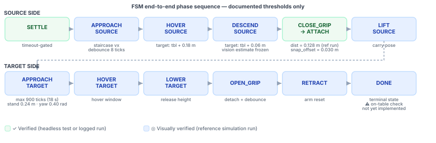
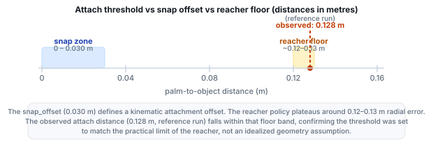
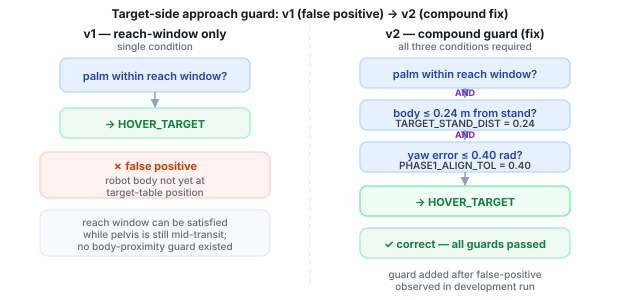

Evidence framework
Every claim on this page carries one of three explicit status labels. Nothing is promoted above its actual evidence level.
The reference-run visual inspection was a single MuJoCo render watched during development. It confirms that the described behavior occurred at least once under the conditions of that run. It does not constitute repeated-trial success, and it does not substitute for a programmatic outcome check. The distinction between headless-validated claims and visual-pass claims is kept explicit throughout this page.
What is proven
The following were confirmed by code that runs headlessly and returns a verifiable result. No human observation was required.
| Claim | How it was confirmed | Scope and caveat |
|---|---|---|
|
Scene, cameras, bodies, sites, joints, and ONNX policies all load cleanly.
✓ Verified |
Headless smoke test (scripts/smoke_env.py) asserts each named
element and warms up both ONNX models before any rollout.
|
Validates asset loading and policy I/O contract, not task success. |
|
ONNX models expect raw, un-normalized observations.
✓ Verified |
Logged output comparison: raw-zero input → action max 0.628; normalized-zero input → action max 14.78. The walker ONNX already applies internal normalization. | Establishes the observation contract for the walker. Any external normalization layer doubles it and destabilizes the gait. |
|
Kinematic attachment triggered at a distance consistent with the reacher floor.
✓ Verified |
Development log records: dist = 0.128 m at attach moment,
snap_offset = 0.030 m. Both values are logged from the grasp
backend at runtime.
|
This is a simulation kinematic shortcut, not physical finger contact. The 0.128 m distance is consistent with the ~0.12–0.13 m reacher floor. |
What is visually verified
The following behaviors were observed in a single reference MuJoCo simulation run. They are not confirmed by automated checks and could not be reproduced under arbitrary initial conditions without additional testing.
| Observed behavior | What was seen | Caveat |
|---|---|---|
|
Source approach and reach corridor entry
◎ Visually verified |
The walker navigated the robot into the source-side reach corridor. The FSM advanced to HOVER_SOURCE after settle and approach phases completed. | Navigation uses ground-truth cylinder pose. Visual Oracle integration is a future step; localization quality is not yet tested under sensor noise. |
|
Hover and descend toward the cylinder
◎ Visually verified |
The right reacher moved the palm toward the hover target (table + 0.18 m) then the grasp target (table + 0.06 m). The palm reached the practical grasp window. | The reacher has a practical accuracy floor of approximately 0.12–0.13 m radial error. Thresholds were set to accommodate that floor, not to assume perfect convergence. |
|
Source lift and carry
◎ Visually verified |
After attachment the cylinder tracked the palm through the lift phase and remained stable in the carry pose during transport. | Carry-pose stability depends on reacher convergence; no explicit carry-error bound was measured. |
|
Target-side navigation and approach
◎ Visually verified |
The walker transported the attached object to the target table. Navigation used a two-phase heading-then-approach strategy with phased velocity (VX_P1 = 0.12). A compound guard (stand distance ≤ 0.24 m, yaw ≤ 0.40 rad) prevented the false positive that occurred in an earlier development iteration. | Heading alignment shows asymptotic slowdown near the desired bearing; the 900-tick timeout (18 s at 50 Hz) provides a fallback. Navigation was tuned empirically for this scene geometry. |
|
Placement and release above target surface
◎ Visually verified |
The FSM lowered the object, opened the grip, detached, and retracted. In the reference run the cylinder appeared to come to rest on the target table. | Post-release settling was not confirmed programmatically. No post-DONE proximity check is implemented. Placement success is based entirely on visual inspection of the single reference run. |

What remains caveated
The claims below are either absent from the evidence base, bounded by a single visual observation, or deferred to future work.
| Gap or caveat | Detail | Path to resolution |
|---|---|---|
| On-table placement confirmation | Placement success was judged by watching the reference run. No post-DONE proximity check confirms the cylinder rested on the target table surface. | Implement a post-DONE ground-truth or depth-based proximity check before claiming task success. |
| Visual Oracle source localization | The architecture is designed (RGB segmentation, depth back-projection, EMA smoothing, freeze logic) but the implementation files are not part of this submission. Source-side phases currently use a direct ground-truth simulation state read. |
Implement vision/observer.py, vision/geometry.py, and
policies/fsm_visual_oracle.py; replace the ground-truth read with
the observer output.
|
| Reacher placement precision on the target side | The ~0.12–0.13 m reacher floor that was characterized on the source side applies equally to hover and lower phases on the target side. Placement offset from the intended drop point is not measured. | Log palm-to-drop-point error during HOVER_TARGET and LOWER_TARGET phases. |
| Repeated-trial reproducibility | All visually-verified behaviors derive from a single reference run. Success rate across varied initial conditions is unknown. | Run the FSM headlessly across multiple seeds and log terminal state. |
| Sim-to-real transfer | The baseline has not been tested outside MuJoCo. Contact dynamics, sensor noise, and latency are absent from the current evaluation. | Domain randomization, noise injection, and real-hardware testing are all future work. |
FSM end-to-end phase sequence
The twelve-state FSM sequences source approach, grasp, transport, and target placement. The figure below annotates each state with its documented exit condition or threshold. States shaded green were confirmed by headless tests or logged run data; states shaded blue were observed in the reference run only.


Attach threshold vs reacher floor
The kinematic grasp backend snaps the cylinder to the palm when the palm reaches a sufficient proximity. The threshold was calibrated to the measured reacher accuracy floor so that attachment would trigger reliably without requiring the reacher to achieve a geometrically ideal pose.

Target-side false-positive bug and fix
During development, target-side approach success was initially checked with only a reach-window distance condition. This produced false positives: the reach window could be satisfied while the robot's pelvis was still in transit, causing the FSM to advance to HOVER_TARGET before the robot was correctly positioned over the target table.
The fix added a compound guard requiring all three conditions simultaneously: the reach window, a world-frame body proximity check (≤ 0.24 m from the target stand), and a yaw alignment check (heading error ≤ 0.40 rad). Only after all three held was the transition allowed.


Simulation milestone table
Summary of all milestones with explicit evidence level. No result appears here at a higher evidence level than its source warrants.
| Milestone | What it demonstrated | Outcome | Status | Caveat |
|---|---|---|---|---|
| Headless smoke test | Environment and assets were ready for autonomous control. | Scene, cameras, bodies, sites, joints, and ONNX policy warmups passed. | ✓ Verified | Validates asset loading and policy I/O, not task success. |
| ONNX observation contract | Confirmed that the walker ONNX applies internal normalization. | Raw-zero input → action max 0.628; normalized-zero input → action max 14.78. | ✓ Verified | External normalization must not be applied to walker observations. |
| Source approach | Walker moved the robot into the source-side reach corridor. | FSM reached HOVER_SOURCE after settle and approach phases. | ◎ Visually verified | Uses ground-truth cylinder pose; Visual Oracle not yet integrated. |
| Hover and descend | Right reacher moved toward hover and grasp-height targets. | Palm reached the practical grasp window (reacher floor ~0.12–0.13 m). | ◎ Visually verified | Thresholds were tuned to the floor, not to perfect convergence. |
| Kinematic grasp | Deterministic grasp backend stabilized object pickup. | Attachment at dist = 0.128 m (snap_offset = 0.030 m). | ✓ Verified | Simulation kinematic shortcut; not physical finger contact. |
| Source lift | Attached object was lifted and carried in the right hand. | Cylinder tracked the palm through lift and transport phases. | ◎ Visually verified | Carry-pose stability depends on reacher convergence; no error bound measured. |
| Target transport | Walker transported the attached object to the target side. | Robot carried the cylinder using the compound-guarded approach. | ◎ Visually verified | Navigation tuned empirically; 900-tick timeout provides fallback. |
| Placement and release | FSM lowered, opened grip, detached, and retracted. | Object released above target surface; appeared to rest on table in reference run. | ◎ Visually verified | No post-DONE proximity check; success based solely on visual inspection. |
| Visual Oracle source localization | Localize the source object from camera data without a ground-truth state read. | Architecture designed; implementation files not in this submission. | ○ Proposed | Deterministic depth back-projection with EMA smoothing; occlusion risk remains. |